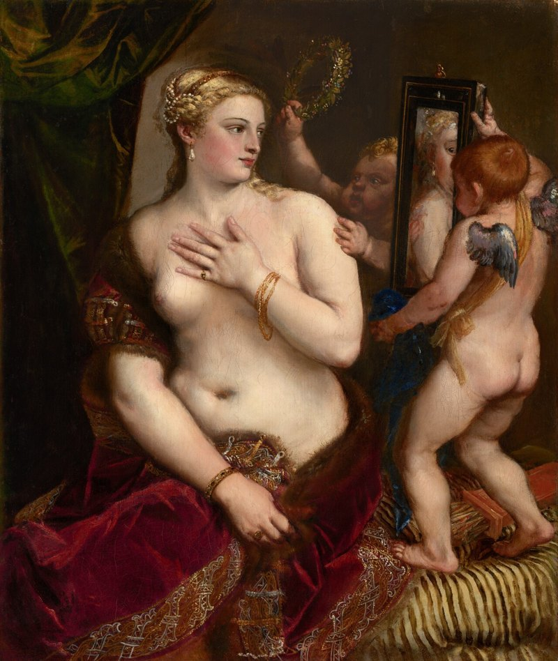
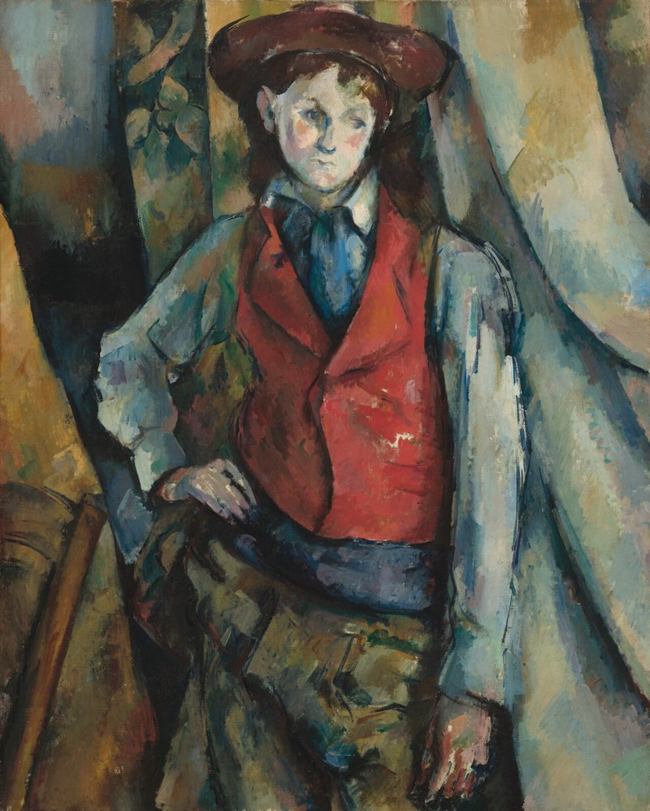
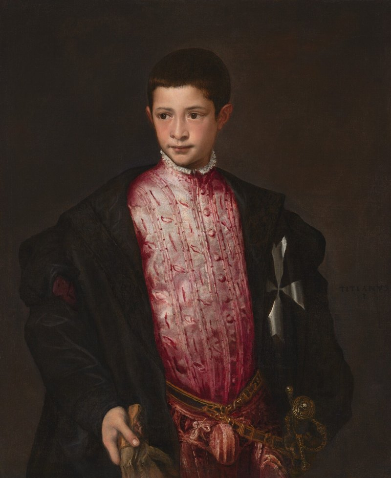

Connections, National Gallery of Art
Systems & Interaction · Interactive gallery experience · Aug – Dec 2025
With my team, I partnered with the National Gallery of Art to explore how museum experiences can center complexity and multiple perspectives over singular narratives. We used human-centered methods, including ethnographic observation, stakeholder interviews and participatory research, to identify systemic challenges and opportunities. We synthesized the qualitative data through affinity mapping and systems mapping to reveal relationships and leverage points, then developed contextually grounded design recommendations supported by iterative prototyping and user testing.
Play it
The prototype is a connections-style game set in the gallery. Study the four paintings, then sort the cards.
Gallery Connections



Research map
How might we create interactivity and play at the NGA that resonates across age groups, making learning and engagement meaningful for both children and adults?
Hover or tap anything to trace how it fed into the rest of the process. Click to pin it. Pulled from the team’s research board.
Systems map
Hover or tap a node to see what it connects to. Redrawn from the team’s systems map.